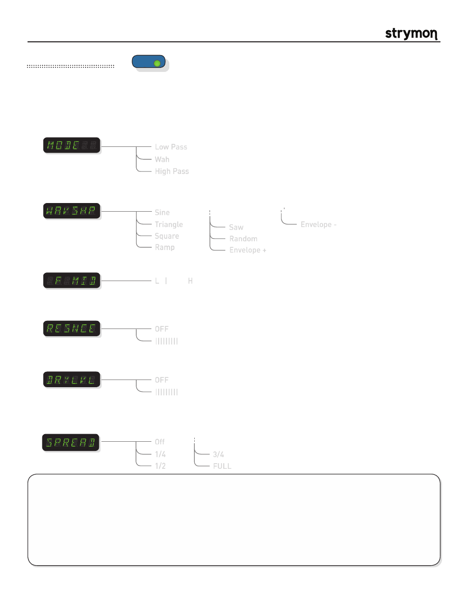

Mobius
-
User Manual
®
pg 13
TYPE
push (bank/BPM)
hold (save)
push (param)
hold (global)
VALUE
PARAM 1
PARAM 2
B
TAP
A
SPEED
DEPTH
LEVEL
BANK DOWN
BANK UP
FILTER
DESTROYER
VIBE
ROTARY
FLANGER
PHASER
CHORUS
FORMANT
AUTOSWELL
VINTAGE TREM
PATTERN TREM
QUADRATURE
®
Mod Machines: Filter
An LFO synced filter with three filter types, eight LFO waveshapes and variable resonance. Envelope filtering and traditional
Wah effects (with an Expression pedal) are available.
Frequency Mid
: Adjusts the frequency midpoint of the filter sweep.
L | H
PARAMETERS:
Waveshape
:
Sets waveform shape that the LFO will utilize. Both + and - envelope modes
trigger the filter based on the input level but in opposite directions.
TIPS & TRICKS:
With the MODE set to WAH and the DEPTH knob at minimum, attach an expression pedal to control the
F MID param and you’ve got a great sounding wah effect with adjustable Q (resonance).
When using the Env+ or Env- waveshapes, adjust the DEPTH knob to set the response of the filter to your playing
dynamics. Try higher DEPTH for weaker input signals, or back it off with hotter inputs. The SPEED knob controls how
quickly the filter follows the envelope. Set high for funky single line riffs, or lower for smoother response for rhythm
work.
Add some dry signal to make more subtle filtering effects.
Triangle
Square
Ramp
Saw
Random
Envelope +
Envelope -
Sine
Low Pass
Wah
High Pass
Mode
:
Selects the current filter type. The low pass filter will cut high frequencies, the high
passfilter will cut low frequencies, and wah is a classic wah wah bandpass type filter.
Resonance
:
Sets the amount of feedback in the filter. High resonance causes ringing at the
cutoff frequency and subsequently a boost around the cutoff.
OFF
|||||||||
Dry Level
:
Sets the amount of unfiltered signal at the output.
OFF
|||||||||
Spread:
Determines the phase offset between the Left and Right LFO signals. Listen to the
effect it has on the stereo image as you adjust the parameter.
note:
Only applies
when using the unit in a stereo configuration.
Off
1/4
1/2
3/4
FULL